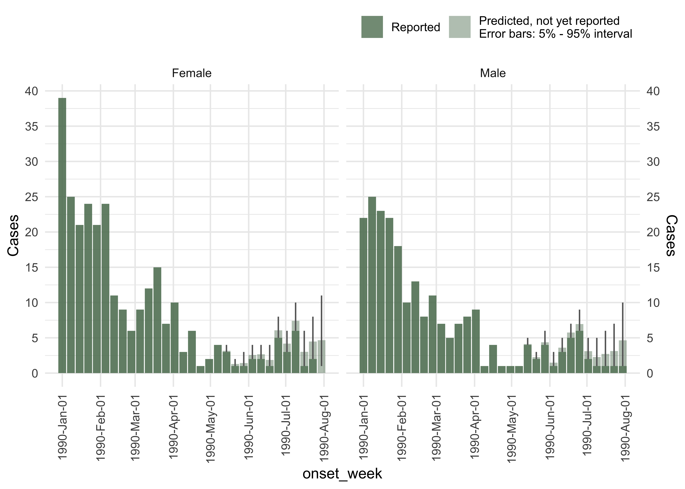

diseasenowcasting is an R package for nowcasting time series of epidemiological cases. Epidemiologic surveillance tools usually have an intrinsic delay between the true date of an event and the report date for that event. Some examples include the true date being symptom onset or testing time and the report date corresponds to when the case was registered in the system. diseasenowcasting uses Bayesian structural time series models (via the probabilistic programming language Stan) to infer the cases that have not yet been reported thus providing a prediction of the final number of cases.
⚠️
diseasenowcastingis currently under active development and some interface might change from the final version.
Installing
To install diseasenowcasting you need to use the remotes package.
#install.packages("remotes") # <- Uncomment if you have not installed the `remotes` package
remotes::install_github("RodrigoZepeda/diseasenowcasting", dependencies = c("Imports","Suggests"))Example
set.seed(6728)
library(diseasenowcasting)
library(dplyr)For this example we will use the denguedat dataset that comes with the package.
#Load example dataset
data(denguedat)The [nowcast()] function performs the nowcast. The things required are the true_date and report_date and strata (if exists).
#Use just a subsample of the data for the example
denguedat <- denguedat |>
filter(report_week <= as.Date("1990/08/01", format = "%Y/%m/%d"))
#Run the nowcast model stratified by gender. Refresh = 0 makes it quiet
ncast <- nowcast(denguedat, true_date = "onset_week", report_date = "report_week",
strata = "gender", refresh = 0)The summary and plot options allow you to use the predictions:
#Create a nice plot for the predictions
plot(ncast, datesbrakes = "1 month")
Tutorials
You can read the following articles for a more in-depth introduction to the package:
- An introduction to the package: provides an overview of the main functions.
-
Advanced nowcast options: provides an in-depth look at the
nowcast()function and its options. - Comparison to other methods: provides a comparison in terms of metrics to other nowcasting packages.
Developing
If you are interested on developing the package, after downloading the repository you might need to run
rstantools::rstan_config()before the
devtools::load_all(".")in order for the C++ files to be generated for your specific system.
Developing issues with RStudio
In RStudio there might be an error message when loading the package of
a workaround is to include the following line on the configure
and configure.win files:
Then, use R from the terminal and run:
Afterwards, in a new R session in RStudio you can finally load:
devtools::load_all(".")